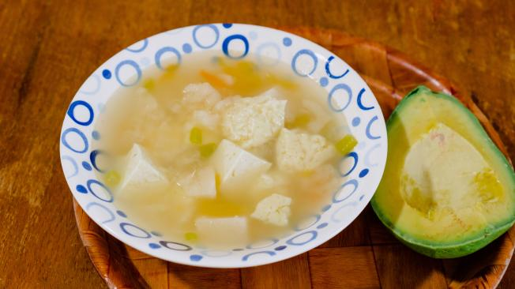

Mote de Queso

Descripción
La gastronomía colombiana es deliciosa y muy variada. De hecho, cada región tiene sus propios platos y en sus matices lo que menos hace falta es el sabor.
La región costera de Colombia, en particular, tiene una preparación que, con solo decir su nombre, se sabe de donde proviene:
el mote de queso.
Con 2 libras de queso costeño y 4 libras de ñame, la receta de
esta sopa típica del Caribe colombiano, lo hará sentir en la región costera de
Colombia junto al calor y el vallenato.
Así que si usted quiere hacer la preparación, siga los pasos aquí descritos. No olvide seguir las cantidades de cada ingrediente.
Ingredientes
- 1/2 libra de cebolla blanca.
- 7 dientes de ajo.
- Sal al gusto.
- 50 gramos de mantequilla.
- 1 chorrito de aceite.
- 2 libras de queso costeño.
- 4 libras de ñame.
- 1/2 libra de cebollín o cebolla en rama.
- 300 gramos de suero costeño.
- 1/2 libra de cebolla morada.
Pasos para la preparación
- Lo primero que debe hacer para preparar el mote costeño es hervir agua en una olla.
- cortar la mitad del ñame para así pelarlo. (Procure lavarlo muy bien, al menos dos o tres veces).
- Una vez tenga pelados los pedazos de ñame, se sugiere picar cubos de 1 cm * 1 cm.
- Una vez que el agua está hervida, agregue los pedazos de ñame al agua.
- Mientras el ñame se cocina por una hora.
- Tome el ajo y las cebollas y píquelos en trozos pequeños.
- Después de la hora, el ñame va a empezar a botar espuma, pues esto indica que el alimento ya se está cocinando. Luego de 30 minutos, aplaste el ñame con ayuda de las paredes de la olla.
- Tome el queso costeño y píquelo en cubos. En un sartén agregue el chorrito de aceite, los 50 gramos de mantequilla derretida, las cebollas y por último añada el ajo.
- “Luego de 45 minutos de hervor del ñame, incorporar el guiso salteado, revolver con fuerza y adicionar los cubos de queso junto con las hojas de bleo”.
- Por último, le puede añadir suero costeño y sal al gusto. Y listo, tiene su plato típico.
Sirva al gusto!